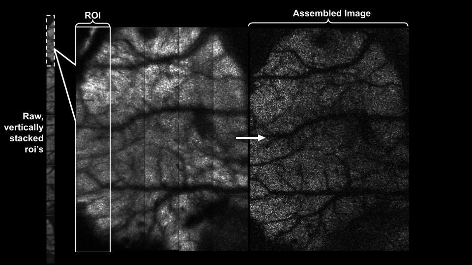

mbo_utilities: User Guide#
Installation | Supported Formats | MBO Hub
An image I/O library with an intuitive GUI for scientific imaging data.
Reading and Writing Data#
imread is a lazy-file reader.
Pass a file, list of files, or directory and it will read the image data and metadata.
Wrap a numpy array with imread(array) and have access to all lazy operations.
Volumetric data are read by passing in the directory containing each z-plane.
# Read any supported format - returns a lazy array
arr = mbo.imread(
inputs, # Path, list of paths, directory, or numpy array
# ScanImage TIFF options ---
roi=None, # ROI selection: None=stitch, 0=split, N=specific ROI
fix_phase=True, # Enable bidirectional scan-phase correction
phasecorr_method="mean", # Phase estimation: "mean", "median", or "max"
use_fft=False, # Use FFT-based subpixel correction (slower, more precise)
upsample=5, # Upsampling factor for subpixel phase estimation
border=3, # Border pixels to exclude from phase calculation
max_offset=4, # Maximum phase offset to search (pixels)
**kwargs # Additional format-specific options
)
# Write to any supported format
mbo.imwrite(
lazy_array, # Source array (from imread or np.ndarray wrapped)
outpath, # Output directory or file path
ext=".tiff", # Output format: ".tiff", ".zarr", ".h5", ".bin", ".npy"
planes=None, # Z-planes to export (1-based): None=all, int, or list
num_frames=None, # Number of frames to write (None=all)
roi_mode="concat_y", # ROI handling: "concat_y" (stitch) or "separate"
roi=None, # Specific ROI(s) when roi_mode="separate"
register_z=False, # Enable Suite3D axial registration
shift_vectors=None, # Pre-computed z-shift vectors (n_planes, 2)
metadata=None, # Additional metadata dict to embed
overwrite=False, # Overwrite existing files
order=None, # Reorder planes before writing
target_chunk_mb=100, # Target chunk size in MB for streaming
output_name=None, # Custom filename for .bin output
output_suffix=None, # Custom suffix (default: "_stitched" for multi-ROI)
progress_callback=None, # Callback: func(progress, current_plane)
show_progress=True, # Show tqdm progress bar
debug=False, # Enable verbose logging
# Zarr-specific options (ext=".zarr") ---
sharded=True, # Use sharding (recommended for large data)
ome=True, # Write OME-NGFF metadata
level=1, # Compression level (0=none, 1-9=gzip)
shard_frames=None, # Frames per shard (default: 100)
chunk_shape=None, # Inner chunk shape (t, y, x), default: (1, h, w)
**kwargs # Additional format-specific options
)
from pathlib import Path
import numpy as np
import mbo_utilities as mbo
import matplotlib.pyplot as plt
RAW_PATH = Path(r"D:\SERVER_DATA\raw_scanimage_tiffs")
SAVE_PATH = Path(r"D:\SERVER_DATA\raw_scanimage_tiffs\volume")
Load a data file#
This demo will use raw ScanImage tiffs.
Raw ScanImage TIFFs are detected automatically and return an MboRawArray:
help(imread)
arr = mbo.imread(RAW_PATH)
print(f"Type: {type(arr).__name__}")
print(f"Shape (T, Z, Y, X): {arr.shape}")
print(f"Planes: {arr.num_planes}, Frames: {arr.num_frames}, ScanImage multi-ROIs: {arr.num_rois}")
Type: LBMArray
Shape (T, Z, Y, X): (1163, 14, 448, 448)
Planes: 14, Frames: 1163, ROIs: 2
Save a small test dataset#
Extract 100 frames from planes 7-9 to work with.
Use output_suffix to customize the output filename (default: _stitched for multi-ROI data):
# arr.fix_phase = True # Enable scan-phase correction
# arr.roi = None # Stitch ROIs together
mbo.imwrite(
arr,
SAVE_PATH,
ext=".zarr",
planes=[7, 8, 9],
num_frames=100,
overwrite=True,
roi=None, # 0 to separate, None to stitch ROIs
output_suffix="_example", # Custom suffix: plane07_example.zarr instead of plane07_stitched.zarr
)
print(f"Saved to: {SAVE_PATH}")
Read and explore the saved data#
# read a single plane
arr = mbo.imread(SAVE_PATH)
print(f"Volume Shape: {arr.shape}, Dtype: {arr.dtype}")
arr = mbo.imread(SAVE_PATH / "plane07_example.zarr")
print(f"Plane Shape: {arr.shape}, Dtype: {arr.dtype}")
# Numpy-like indexing
frame = arr[0] # First frame
subset = arr[10:20] # Frames 10-19
crop = arr[:100, 0, 100:200, 100:200] # Spatial crop
print(f"Single frame: {frame.shape}")
print(f"Subset: {subset.shape}")
print(f"Crop: {crop.shape}")
Single frame: (550, 1, 448)
Subset: (10, 1, 550, 448)
Crop: (100, 100, 100)
# Reduction operations
mean_img = arr[:200, 0, :, :].mean(axis=0).squeeze()
max_img = arr[:200, 0, :, :].max(axis=0).squeeze()
std_img = arr[:200, 0, :, :].std(axis=0).squeeze()
fig, axes = plt.subplots(1, 3, figsize=(12, 4))
axes[0].imshow(mean_img, cmap='gray'); axes[0].set_title('Mean')
axes[1].imshow(max_img, cmap='gray'); axes[1].set_title('Max')
axes[2].imshow(std_img, cmap='gray'); axes[2].set_title('Std')
for ax in axes: ax.axis('off')
plt.tight_layout()
plt.show()
Accessing metadata#
All lazy arrays expose metadata via the .metadata property:
metadata = arr.metadata
Imaging vs Acquisition Metadata#
Imaging metadata describes the physical data:
dx,dy,dz- voxel size in µmfs- frame rate in HzLx,Ly- image dimensions in pixelsnum_zplanes,num_timepoints,dtype
Acquisition metadata describes how the data was collected (ScanImage-specific):
num_mrois- number of scan regionsroi_groups,roi_heights- ROI configurationfix_phase,phasecorr_method- scan-phase correction settingszoom_factor,objective_resolution- optical parameters
Array-Type-Specific Metadata#
Some metadata only applies to certain stack types:
Parameter |
LBM Stack |
Piezo Stack |
Single Plane |
|---|---|---|---|
|
> 1 |
> 1 |
1 |
|
user-supplied |
from SI |
N/A |
|
no |
yes |
yes |
|
yes |
varies |
varies |
Quick Access#
View metadata via CLI:
uv run mbo info /path/to/data
uv run mbo /path/to/data --metadata
from pprint import pprint
pprint(arr.metadata, depth=1)
{'PhysicalSizeX': 2.0,
'PhysicalSizeXUnit': 'micrometer',
'PhysicalSizeY': 2.0,
'PhysicalSizeYUnit': 'micrometer',
'PhysicalSizeZ': 5.0,
'PhysicalSizeZUnit': 'micrometer',
'border': 3,
'dtype': 'int16',
'dx': 2.0,
'dy': 2.0,
'dz': 5.0,
'file_paths': [...],
'fix_phase': True,
'fov': [...],
'fov_px': [...],
'frame_rate': 13.99553782981917,
'frames_per_file': [...],
'max_offset': 4,
'mean_subtraction': False,
'ndim': 2,
'nframes': 1574,
'num_files': 2,
'num_fly_to_lines': 16,
'num_frames': 1574,
'num_planes': 14,
'num_rois': 2,
'objective_resolution': 61,
'offset': np.float64(1.0),
'page_height': 1116,
'page_width': 224,
'phasecorr_method': 'mean',
'pixel_resolution': (...),
'roi_groups': [...],
'roi_heights': [...],
'si': {...},
'size': 249984,
'umPerPixX': 2.0,
'umPerPixY': 2.0,
'umPerPixZ': 5.0,
'uniform_sampling': 1,
'upsample': 5,
'use_fft': False,
'voxel_size': (...),
'z_step': 5.0,
'zoom_factor': 2}
Saving data: Formats and Conversions#
Convert between any supported formats with imwrite().
Here, we load the .zarr previously saved, add some metadata, and re-save to several of the supported formats.
Note: Keep different filetypes in separate directories.
Warning
When saving z-planes with inconsistent frame counts (e.g., some planes have 1574 frames, others have 1500), only the minimum number of frames across all planes will be written.
# Load the zarr we saved earlier
arr = mbo.imread(SAVE_PATH / "plane07_example.zarr")
new_metadata = {"test": [123]}
# Convert to different formats (each in its own directory)
mbo.imwrite(arr, SAVE_PATH / "tiff", ext=".tiff", overwrite=True, metadata=new_metadata)
mbo.imwrite(arr, SAVE_PATH / "hdf5", ext=".h5", overwrite=True, metadata=new_metadata)
mbo.imwrite(arr, SAVE_PATH / "suite2p", ext=".bin", overwrite=True, metadata=new_metadata)
print(f"New metadata: {mbo.imread(SAVE_PATH / 'tiff').metadata['test']}")
Working with In-Memory Numpy Arrays#
You can wrap any numpy array with imread() to get full imwrite() support, including zarr chunking, compression, and sharding.
For detailed documentation on NumpyArray properties, methods, and use cases, see Supported Formats.
import numpy as np
import mbo_utilities as mbo
data = np.random.randn(100, 512, 512).astype(np.float32)
# Wrap with imread - returns a NumpyArray lazy array
arr = mbo.imread(data)
print(arr) # NumpyArray(shape=(100, 512, 512), dtype=float32, dims='TYX' (in-memory))
# Now you can use imwrite with all features
mbo.imwrite(arr, "output", ext=".zarr") # Zarr with chunking/sharding
mbo.imwrite(arr, "output", ext=".tiff") # BigTIFF
mbo.imwrite(arr, "output", ext=".bin") # Suite2p binary format
mbo.imwrite(arr, "output", ext=".h5") # HDF5
# 4D arrays (T, Z, Y, X) also work
volume = np.random.randn(100, 15, 512, 512).astype(np.float32)
arr4d = mbo.imread(volume)
print(f"dims: {arr4d.dims}, num_planes: {arr4d.num_planes}") # dims: TZYX, num_planes: 15
# Write specific planes (1-based indexing)
mbo.imwrite(arr4d, "output", ext=".zarr", planes=[1, 7, 14])
User Interface: MBO-GUI#
The GUI can be launched in two ways:
From Python (Jupyter Lab or Jupyter Notebook only, not VSCode):
mbo.run_gui(arr)
From the command line (works anywhere):
uv run mbo /path/to/data
See the GUI documentation for details.
# To run from the command line, through jupyter:
!uv run mbo --help
Usage: mbo [OPTIONS] COMMAND [ARGS]...
MBO Utilities CLI - data preview and processing tools.
GUI Mode:
mbo Open file selection dialog
mbo /path/to/data Open specific file in GUI
mbo /path/to/data --metadata Show only metadata
Commands:
mbo convert INPUT OUTPUT Convert between formats
mbo info INPUT Show array information (CLI)
mbo formats List supported formats
Utilities:
mbo --download-file URL -o /path/ Download file from GitHub
mbo --download-notebook Download user guide notebook
mbo --check-install Verify installation
Options:
--download-notebook Download the user guide notebook and exit.
--notebook-url TEXT URL of notebook to download.
--download-file TEXT Download a file from URL (e.g. GitHub).
-o, --output TEXT Output path for --download-file or --download-
notebook.
--check-install Verify the installation of mbo_utilities and
dependencies.
--help Show this message and exit.
Commands:
convert Convert imaging data between formats.
formats List supported file formats.
info Show information about an imaging dataset.
view Open imaging data in the GUI viewer.
!uv run mbo info D:/demo/raw
Loading: D:/demo/raw
Array Information:
Type: MboRawArray
Shape: (1574, 14, 550, 448)
Dtype: int16
Ndim: 4
Files: 2
- D:\demo\raw\demo_mk355_7_27_2025_00001.tif
- D:\demo\raw\demo_mk355_7_27_2025_00002.tif
Metadata:
nframes: 1574
num_frames: 1574
num_rois: 2
... and 42 more keys
Counting frames: 0%| | 0/2 [00:00<?, ?it/s]
Counting frames: 100%|██████████| 2/2 [00:00<?, ?it/s]
Special array characteristics#
Lazy arrays have special characteristics depending on what the filetype is used for.
Bi-directional Scan-phase correction (ScanImage Tiff)#
ScanImage Tiffs (MboRawArray) only.
Bidirectional scanning creates phase offsets between alternating lines:

arr.roi = None
fig, axes = plt.subplots(1, 3, figsize=(15, 5))
arr.fix_phase = False
img_no_corr = arr[:,7,:,:].max(axis=0)[130:190, 250:280]
axes[0].imshow(img_no_corr, cmap='gray')
axes[0].set_title('No Scan-Phase Correction', fontsize=12, fontweight='bold')
axes[0].axis('off')
arr.fix_phase = True
arr.use_fft = False
img_corr = scan[:,7,:,:].max(axis=0)[130:190, 250:280]
axes[1].imshow(img_corr, cmap='gray')
axes[1].set_title('With Scan-Phase Correction', fontsize=12, fontweight='bold')
axes[1].axis('off')
scan.fix_phase = True
scan.use_fft = True
img_fft = scan[:,7,:,:].max(axis=0)[130:190, 250:280]
axes[2].imshow(img_fft, cmap='gray')
axes[2].set_title('FFT Scan-Phase Correction\n(Best, Slower)', fontsize=12, fontweight='bold')
axes[2].axis('off')
plt.tight_layout()
plt.show()
# clear out these large arrays in memory
del img_no_corr, img_corr, img_fft
Multi-ROI handling (ScanImage Tiff)#
Control how multiple ROIs are handled.
By default, they are stitched horizontally:

arr = mbo.imread(RAW_PATH)
print(f"ROIs: {arr.num_rois}")
# roi=None: Stitch horizontally (default)
arr.roi = None
print(f"Stitched shape: {arr[0, 7].shape}")
# roi=0: Split into separate arrays
arr.roi = 0
roi1, roi2 = arr[0, 7]
print(f"Split shapes: {roi1.shape}, {roi2.shape}")
# roi=N: Select specific ROI (1-indexed)
arr.roi = 1
print(f"ROI 1 only: {arr[0, 7].shape}")
ROIs: 2
Stitched shape: (550, 448)
Split shapes: (550, 224), (550, 224)
ROI 1 only: (550, 224)
Axial registration (ScanImage Tiff: Suite3D)#
Light-beads-microscopy acquisition typically results in each z-plane having a spatial shift relative to adjacent planes. This can be corrected automatically by setting register_z=True.
Suite3D creates a s3d-preprocessed directory containing planar shifts and intermediates. During writing, these shifts are loaded and applied to selected z-planes.
arr = mbo.imread(RAW_PATH)
arr.roi = None
arr.fix_phase = True
mbo.imwrite(
arr,
SAVE_PATH / "zreg",
ext='.zarr',
num_frames=100,
planes=[6, 7, 8],
overwrite=True,
register_z=True, # Enable Suite3D axial registration
)
# Check outputs
print("Output directories:")
for p in (SAVE_PATH / "zreg").iterdir():
print(f" {p.name}")
# Load Suite3D registration summary
summary_path = SAVE_PATH / "zreg" / "s3d-preprocessed" / "summary" / "summary.npy"
if summary_path.exists():
summary = np.load(summary_path, allow_pickle=True).item()
plane_shifts = summary['plane_shifts']
print(f"Plane shifts (Y, X):\n{plane_shifts}")
# Visualize before/after registration
fig, axes = plt.subplots(1, 2, figsize=(10, 5))
axes[0].imshow(summary['raw_img'].max(axis=0), cmap='gray')
axes[0].set_title('Before registration (max proj)')
axes[1].imshow(summary['ref_img_3d'].max(axis=0), cmap='gray')
axes[1].set_title('After registration (max proj)')
for ax in axes: ax.axis('off')
plt.tight_layout()
plt.show()
import fastplotlib as fpl
from ipywidgets import VBox
arr = mbo.imread(SAVE_PATH / "plane07_example.zarr")
iw_movie = fpl.ImageWidget(arr[:], cmap="viridis")
tfig = fpl.Figure()
raw_trace = tfig[0, 0].add_line(np.zeros(arr.shape[0]))
@iw_movie.managed_graphics[0].add_event_handler("click")
def pixel_clicked(ev):
col, row = ev.pick_info["index"]
raw_trace.data[:, 1] = iw_movie.data[0][:, row, col]
tfig[0, 0].auto_scale(maintain_aspect=False)
VBox([iw_movie.show(), tfig.show()])
Video Export#
Export calcium imaging data to video files for presentations and sharing with to_video.
from mbo_utilities import imread, to_video
arr = imread("data.tif")
# basic export
to_video(arr, "output.mp4")
# quick preview with speed factor (10x playback)
to_video(arr, "preview.mp4", speed_factor=10)
# high-quality export for presentations
to_video(
arr,
"movie.mp4",
fps=30,
speed_factor=5,
temporal_smooth=3, # reduce frame-to-frame flicker
gamma=0.8, # brighten midtones
quality=10, # highest quality
)
Parameters#
Parameter |
Default |
Description |
|---|---|---|
|
30 |
Base frame rate |
|
1.0 |
Playback speed multiplier |
|
None |
Z-plane to export (for 4D data) |
|
0 |
Rolling average window (frames) |
|
0 |
Gaussian blur sigma (pixels) |
|
1.0 |
Gamma correction (<1 = brighter) |
|
None |
Matplotlib colormap name |
|
9 |
Video quality (1-10) |
|
1.0 |
Percentile for auto min |
|
99.5 |
Percentile for auto max |
4D Data#
For 4D data (T, Z, Y, X), select which z-plane to export:
to_video(arr_4d, "plane5.mp4", plane=5)